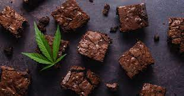

Spacial Brownie

El brownie de marihuana es una deliciosa variante de la receta tradicional, la cual contiene THC, entre otros cannabinoides.
El brownie de marihuana es una deliciosa variante de la receta tradicional, la cual contiene THC, entre otros cannabinoides.
Se trata de uno de los postres cannábicos más fáciles de cocinar Aquí os dejamos esta sencilla y deliciosa receta para prepararlo.
El brownie de marihuana es la versión cannábica de un clásico que a la gente le encanta como postre, merienda, etc. En este caso con un efecto divertido incluido. Hay que tener en cuenta que se debe comer con moderación, sin superar la ración aconsejada, porque si no, el efecto puede dejar de ser divertido, sobre todo en personas que no están muy acostumbradas al cannabis.
Aquí se encuentra una forma de elaborarlo paso a paso:
150 gr de chocolate en polvo
90 gr de mantequilla de marihuana
1 taza de azúcar
1 cucharada de esencia de vainilla
1/2 taza de harina
4 huevos
70 gr de nueces en trocitos pequeños
Virutas de chocolate
Existen diversas recetas para cocinar un delicioso brownie de marihuana. Entre ellas se encuentra la que se detalla a continuación. Para elaborarlo de forma sencilla se deben seguir los siguientes pasos:
Para esta receta se usará mantequilla de marihuana, por lo que es interesante tenerla preparada 24 horas antes de preparar este plato.
Poner a precalentar el horno. Lo primero que se debe hacer es derretir el chocolate al baño maría, junto con la mantequilla.
Mientras tanto se baten los huevos y se añade tanto azúcar como vainilla. Una vez esté bien mezclado se agrega la harina y se remueve bien.
A continuación, añade a la mezcla la mantequilla y el chocolate mezclándolo todo bien hasta que quede una textura suave y sin grumos.
Por último, agrega las nueces y acaba de mezclar todo bien.
Ahora se debe cubrir un recipiente apto para horno con papel vegetal, y echar la mezcla.
Decora el brownie de marihuana por encima con las virutas de chocolate.
Una vez listo, se mete al horno a unos 150ºC durante 40 minutos aproximadamente. Es conveniente que se vaya comprobando cuando está listo para que no se queme. Para ello, se puede utilizar un palillo metiéndolo en el centro del pastel y si sale limpio significa que ya está listo.
Cuando se enfríe, ya estará listo para comer.
Otras Recetas